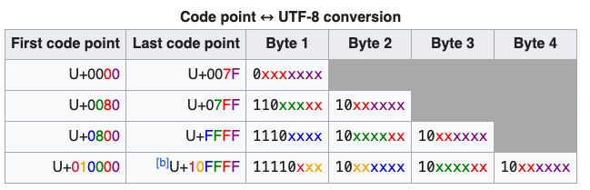

# d * (16**0) + 7 * (16**1) = 13 + 7 * 16
hex(125)'0x7d'Safouane Chergui
July 7, 2024
The aim of this blog is to explain to you how BPE Tokenization works. We’re going to build a basic tokenizer using BPE tokenization and we’ll apply it on a dummy example.
We’re not going to go into the gory details of it. If you’d like a great source for the details of tokenization, watch this 2-hour long video by the amazing Andrej Karpathy. Everything in this post comes from Andrej’s video or the resources he shared in his video.
Table of contents
- Hexadecimal representation
- UTF-8 encoding
- Some Unicode vocab
- WTF is UTF-8 ?
- A sentence example
- BPE Tokenization
- BPE in action
- How does it work
- Let us build a BPE tokenizer
- Encoding
- Decoding
- One last problem to solve
- One final example
Let go for a quick tour of hexadecimal representation. We, as humans, usually represent numbers in base 10. Computers make use of base 2 representation.
Hexadecimal representation means representing a number in base 16. Numbers are represented using 0 to 9 and A-F, with A being equivalent to 10, B to 11, …, F to 15.
The number 125 can be written in hexadecimal as 7D.
Now, a byte is represented with 8 bits, with a range going from 00000000 to 11111111 <-> 0 to 255 in decimal <-> 00 to FF in hexadecimal
Note: The prefix 0x is used in intergers to tell Python to interpret the number as a hexadecimal. For example:
Little background about UTF-8 encoding. So, UTF-8 is an encoding that represents Unicode characters using 1 to 4 bytes. So, every string is converted to a series of bytes once encoded using a Unicode encoding (such as UTF-8).
You should know at least these two words when dealing with Unicode: character and code point: - A character is a textual unit in Unicode. It can be anything ranging from a letter, a digit, an emoji, a mathematical symbol, etc.
character = "A"
print(f"Character: {character}")
# First letter of my name in Arabic
# You might think of it as S
# Arabic speakers, don't insult me for this analogy
arabic_s_character = "ص"
print(f"Arabic character: {arabic_s_character}")Character: A
Arabic character: صord function.A_code_point = ord(character)
print(f"The character {character} has as a code point {A_code_point} in decimal, which corresponds to {hex(A_code_point)} in hexadecimal")
arabic_s_code_point = ord(arabic_s_character)
print(f"The character {arabic_s_character} has as a code point {arabic_s_code_point} in decimal, which corresponds to {hex(arabic_s_code_point)} in hexadecimal")The character A has as a code point 65 in decimal, which corresponds to 0x41 in hexadecimal
The character ص has as a code point 1589 in decimal, which corresponds to 0x635 in hexadecimalNice to know: - Use ord to go from a character -> a code point - Use chr to go from a code point -> a character
At this step, I highly advise you to take a look at the start of the Unicode Character Table.
If you look at this table, you’ll see that the character ص doesn’t have 1589 as a code point, it rather has U+0635. These are the same number, it’s just that Unicode uses the hexadecimal notation for code points instead of the decimal one.
So, UTF-8 is a Unicode encoding method. It encodes code points in 1 to 4 bytes (it is a variable-length encoding, not all code points are encoded as 4 bytes as this will consume so much memory!).
Other encoding methods such as UTF-16 and UTF-32 exist but they do things differently than UTF-8. UTF-8 is the most used encoding method in the wild for reasons that I won’t go into in this post.
Now, the thing is that UTF-8 encoding doesn’t just convert the Unicode code point to its binary presentation. It does it in a specific way. The following table from wikipedia explains very well the conversion from code points to UTF8-encoding.
This table shows four ranges, the 1st range is encoded using 1 byte only, the second one 2 bytes, etc. Each range has its own norm for encoding code points using UTF-8.

Character ص example:
The character ص code point is U+0635 (1589 in decimal). If you try to represent this using binary presentation, it doesn’t fit into 1 byte, you’ll need to use 2 bytes.
Using 2 bytes, it yields the following 00000110 00110101. Now, UTF-8 doesn’t use conversion to bytes to encode code points. It has its own rules to do the encoding.
Now, if you look at the table, you see that U+0635 falls between the range of U+0080 and U+07FF. So, we have to use the rule in the second row to encode it using UTF-8.
The way to do this is to fill the x with the numbers in the binary representation starting from the right (copy-paste digit from the binary representation starting from the right): - Before filling: [110]xxxxx [10]xxxxxx - After filling: [110]11000 [10]110101. In hexadecimal, this yields d8 b5.
print(f"The byte 11011000 yields in hexadecimal: {hex(0b11011000)}")
print(f"The byte 10110101 yields in hexadecimal: {hex(0b10110101)}")The byte 11011000 yields in hexadecimal: 0xd8
The byte 10110101 yields in hexadecimal: 0xb5Now, this should match the result of the UTF-8 encoding of the character ص using Python
The same rule can be applied to all the 4 ranges in order to go from a code point to its UTF-8 encoding.
At this step, I suggest you pick some characters from the unicode table page I’ve given you above and do the encoding manually.
Note: There is something that you should note at this step: - Unicode allows us to go from a character to a code point - The UTF-8 encoding (which is one of Unicode available encodings) allows us to go from a code point to a 1 to 4 bytes representation, depending on the character.
This yields the following trajectory: Unicode character <-> Code point -> 1 to 4 bytes representation.
Now, if you take any 1 to 4 bytes number, it doesn’t always map to a code point as it might not respect the rules specified in the wikipedia table above. For example, 11111111 (255 in decimal) corresponds to 1 byte but it’s not a valid unicode encoding. This is because the rule specifies that all 1-byte encoded characters should start with a 0 and not a 1.
Let us now encode a whole sentence and see the result: Hello there صفوان
ex_sentence = "Hello there صفوان"
print(f"The UTF-8 encoding of the sentence '{ex_sentence}' is: {ex_sentence.encode('UTF-8')}")The UTF-8 encoding of the sentence 'Hello there صفوان' is: b'Hello there \xd8\xb5\xd9\x81\xd9\x88\xd8\xa7\xd9\x86'I hope you at least recognize the UTF-8 encoding of the character ص: \xd8\xb5
A question that might come to your mind upong seeing the result is why the hell we have characters like H in a bytes representation. This is something that has to do with the display of bytes in Python.
Python uses a mixed representation of bytes for readability: - ASCII characters, even when encoded as bytes, are displayed in their readable form - Non-ASCII characters, when encoded as bytes, are displayed in hexadecimal format
It’s just a displaying matter !
In order to feed data to a model, we have to first convert it to numerical data. The process for NLP models looks as follow:
Text —> Tokenizer —> Numerical ids (tokens) —> NLP model —> Prediction
Now, if you look at the definition of str in Python, it’s defined as follows:
Textual data in Python is handled with str objects, or strings. Strings are immutable sequences of Unicode code pointsFrom this definition, you can decide to just map every unicode character to its code point. For e.g, ص will be mapped to 1589. Using this technique will yield a vocabulary of almost 150 000 tokens.
The problem with this is: - Your vocabulary will be big. This means that your model will have embedding layers of 150 000 * size_of_your_embeddding - With that many characters, it’s very likely that your model training dataset won’t contain many of them that often, if not at all. If your model gets to see ص very few times, its embedding will be very ill trained. At the end of training, its embedding will be very close to its random initialization state and would be of no use at all. - As your input sentence will be divided in unique characters, a simple sentence will consume lots of tokens in your input context. This means that: - At inference, you’ll have to make predictions for every character - Your sentence will take so much memory because even a simple sentence will be long, many embeddings used and calculations will have to be made over all those embeddings - Simple text will consume so much of the model context size
Let look at this famous sentence The quick brown fox jumps over the lazy dog. If every character is considered a token, it will consist of 28 different tokens
example_sentence= "The quick brown fox jumps over the lazy dog"
print(f"Number of tokens in {example_sentence} is: {len(set([e for e in example_sentence]))}")Number of tokens in The quick brown fox jumps over the lazy dog is: 28If we use GPT-4o tokenizer that is a BPE tokenizer itself, let us see how many tokenizer we get:
import tiktoken
tokenizer = tiktoken.get_encoding("o200k_base")
encoded_input = tokenizer.encode(example_sentence)
print(f"Number of tokens in {example_sentence} with GPT-4o tokenizer is: {len(encoded_input)}")Number of tokens in The quick brown fox jumps over the lazy dog with GPT-4o tokenizer is: 9When we look at the tokens resulting from GPT-4o tokenizer, we get to see that every word is a token in this case.
for token in encoded_input:
print(f"The token with id {token} represents {tokenizer.decode_single_token_bytes(token)}")The token with id 976 represents b'The'
The token with id 4853 represents b' quick'
The token with id 19705 represents b' brown'
The token with id 68347 represents b' fox'
The token with id 65613 represents b' jumps'
The token with id 1072 represents b' over'
The token with id 290 represents b' the'
The token with id 29082 represents b' lazy'
The token with id 6446 represents b' dog'If you’d like to play with different tokenizers, visit this page: https://tiktokenizer.vercel.app/, select the tokenizer and get going!
For this, you’ll need to install tiktoken package using pip install tiktoken.
input_str = "My name is صفوان"
encoded_input = tokenizer.encode(input_str)
print(f"The result of tokenization consists of {len(encoded_input)} tokens: {encoded_input}")The result of tokenization consists of 5 tokens: [5444, 1308, 382, 37315, 10878]Let us decode each one of these tokens and see what they consist of:
for token in encoded_input:
print(f"The token with id {token} represents {tokenizer.decode_single_token_bytes(token)}")The token with id 5444 represents b'My'
The token with id 1308 represents b' name'
The token with id 382 represents b' is'
The token with id 37315 represents b' \xd8\xb5\xd9\x81'
The token with id 10878 represents b'\xd9\x88\xd8\xa7\xd9\x86'I hope you recognize, in the 4th print statement, the hexadecimal representation of the character ص We can see that the fourth
[b'My', b' name', b' is', b' \xd8\xb5\xd9\x81', b'\xd9\x88\xd8\xa7\xd9\x86']Let us decode that fourth element and see what it consists of:
We can see that this token consists of 3 unicode characters: - The space character - ص, the character with the code point U+0635, whose UTF-8 encoding is d8 b5 - ف, the character with the code point U, whose UTF-8 encoding is d9 81
As you might have guessed from its name, the Byte Pair Encoding mechanism does mainly two things to tokenize your data: - It represents strings as streams of bytes. Now, if you represent your data using only bytes, as a character usually consists of many bytes, that will be worse than using unicode code points as tokenized strings will be very very long. A byte can go only from 0 to 255.
and assigned to the whole token ' صف' the id 37315.
Of course, the vocabulary identified by tokenizers can’t just grow indefinitly. otherwise, your model embedding table will also be huge and the model will be practically unusable. That’s why BPE tokenizers have a hyperparameter that specifies the number of merges that can be done when training.
A quick recap: When training a tokenizer, convert string to bytes. The result will consist of numbers going from 0 to 255. Merge bytes that come-up together so often and assign an id to them.
So, we basically need to do three things to build our tokenizer: - Define our basic vocab that we’ll grow as we merge the most common pair of bytes - Convert our corpus to a stream of bytes (just encoding it using UTF-8) - Do the following number_of_merges times: - Get the most common pair of bytes - Merge the two pairs in a new id. Everytime the tokenizer will see the two pairs together, it will map them to the new ID.
So, our starting vocab is just the 1 byte interval (0 to 255), and as we merge the most common, we’ll append new ids corresponding to the merged bytes.
As stated before, the first step is to convert our corpus to a stream of bytes by encoding using UTF-8.
Let us start with a very basic training corpus, it will make testing our functions very easy. Later, we’ll use a corpus consisting of many languages.
As we want to use bytes using the decimal representation (0-255) instead of hexadecimal (0x00 - 0xFF) (the default after encoding with UTF-8) for readability purposes, we’ll do the conversion right away
[72, 101, 108, 108, 111, 32, 72, 101, 108, 108]Let build a function that returns the most common pair of bytes in the whole corpus
from collections import Counter
def get_most_common_pair(encoded_corpus: list[int]) -> tuple:
"""Returns a tuple of the most common pair of bytes in a corpus.
"""
most_common_pair_and_count = Counter(zip(encoded_corpus[:-2], encoded_corpus[1:])).most_common(1)
most_common_pair = most_common_pair_and_count[0][0]
return most_common_pairLet us see what’s the most common pair of bytes in this corpus
most_common_pair = get_most_common_pair(encoded_corpus)
print(f"The most common pair is {most_common_pair}. {most_common_pair[0]} corresponds to {chr(most_common_pair[0])} and {most_common_pair[1]} corresponds to {chr(most_common_pair[1])}")The most common pair is (72, 101). 72 corresponds to H and 101 corresponds to eLet us write a function that takes the encoded corpus, the vocabulary, the pair of ids to merge and: - Updates the vocabulary by adding the new id that replaces the occurence of the pair of the ids to merge - Updates the corpus by replacing the occurence of the pair of ids with the new id
def merge_and_update_corpus_and_vocab(encoded_corpus, vocab, pair_to_merge):
"""Updates the vocab with the new pair of ids to merge
& updates the corpus to use the new id instead of the pair of bytes
"""
updated_corpus = []
updated_vocab = vocab.copy()
# Add id for merged pair in vocab
pair_new_id = max(vocab.keys()) + 1
updated_vocab[pair_new_id] = pair_to_merge
# Update corpus to use the new id instead of the couple the pair of ids
i = 0
while i < len(encoded_corpus):
if (i < len(encoded_corpus) - 1) and encoded_corpus[i] == pair_to_merge[0] and encoded_corpus[i + 1] == pair_to_merge[1]:
updated_corpus.append(pair_new_id)
i += 2
else:
updated_corpus.append(encoded_corpus[i])
i +=1
return updated_corpus, updated_vocabLet us merge now the most common pair of bytes and create one id out of it. The successive 101,32 will be turned into 256.
We can see the presence of a new token id in the corpus: 256
When we check the vocab to see to what it corresponds, we see that it’s a merge of two ids: 72 and 101.
We’ve seen how merging works. Now, we have to apply this merging a number_of_merges times. What you should keep in mind is the following: - You vocab will grow with the number of merges you apply. Say you apply 10 merges, your vocab will go from 256 ids to 266 ids. - The bigger your vocab gets, the bigger your embedding table (whose size corresponds to number of tokens in the vocab * size of embedding) will grow. - Merging indefinitly is not a good idea. The different ids in your vocab will not come up often as tokens in the training corpus of your model. Consequently, some tokens will have random embeddings - Having merged tokens allows you to make good use of your context size as your tokens will can even represent complete words at times
three_merges_corpus, three_merges_vocab = merge_iteratively(encoded_corpus, vocab, 3)
print(f"A glimpse at the start of new corpus: {three_merges_corpus[:10]}")
print(f"The merged ids: {[three_merges_vocab[255 + x] for x in range(1, 4)]}")A glimpse at the start of new corpus: [258, 111, 32, 258, 111, 32, 258, 111, 32, 109]
The merged ids: [(72, 101), (256, 108), (257, 108)]Now, the merge_iteratively function if it’s out of pairs that occur more than once, it will start merging pairs that occur only once. This is not a desired behavior.
This can be handled easily by returning the count of the number of occurences as well in get_most_common_pair and checking that it’s greater than 1 to proceed to merging.
def get_most_common_pair(encoded_corpus: list[int]) -> tuple:
"""Returns a tuple:
- A tuple of the most common pair of ids in a corpus
- The number of occurences of the pair of ids
"""
most_common_pair_and_count = Counter(zip(encoded_corpus[:-2], encoded_corpus[1:])).most_common(1)[0]
return most_common_pair_and_countLet put all these functions in one function that should do the encoding of a string
Now that we can train a tokenizer and encode a string, all that’s left is decoding.
Now, to detokenize tokenized text, it’s not that hard - First, you have to reverse the mapping. You have to unpair the ids. If for example, the id 257=(100,256) and 256=(255, 20), we have to unpair those. But in order for the unpairing to work, we have to unpair the ids starting from the highest id, 257 in this case. 257 will be replaced with (100 and 256) and then 256 can be replaced with (255 and 20). If you don’t do it in the right order, you’ll have some composed ids left and you won’t be able to decode them. - Once the mapping is reversed, you can decode the stream of bytes using UTF-8
Let us first build a function that will help us get the pair of ids that were replaced with a new id
def unpair_ids(corpus, vocab):
"""Reverses new ids in the vocab to their
orignal pair of ids.
"""
for token in sorted(vocab.keys(), reverse=True):
if token > 255:
unpaired_corpus = []
for i in range(len(corpus)):
if corpus[i] == token:
unpaired_corpus.append(vocab[token][0])
unpaired_corpus.append(vocab[token][1])
else:
unpaired_corpus.append(corpus[i])
corpus = list(unpaired_corpus)
return unpaired_corpusprint(f"The first ten tokens of the tokenized corpus looks like: {three_merges_corpus[:10]}")
print(f"The first ten tokens of the unpaired corpus looks as follows: {unpair_ids(three_merges_corpus[:10], three_merges_vocab)}")The first ten tokens of the tokenized corpus looks like: [258, 111, 32, 258, 111, 32, 258, 111, 32, 109]
The first ten tokens of the unpaired corpus looks like: [72, 101, 108, 108, 111, 32, 72, 101, 108, 108, 111, 32, 72, 101, 108, 108, 111, 32, 109]Now that we recovered the corpus with the bytes ids, we can do the UTF-8 decoding:
def decode(tokenized_corpus_with_merges, vocab_with_merges):
unpaired_tokenized_corpus = unpair_ids(tokenized_corpus_with_merges, vocab_with_merges)
# The UTF-8 decoding expects byte objects and not int, we have to convert them to byte first
decoded_corpus = b"".join([x.to_bytes() for x in unpaired_tokenized_corpus]).decode("UTF-8")
return decoded_corpusdecoded_corpus = decode(three_merges_corpus, three_merges_vocab)
print(f"The decoding of the corpus yields: {decoded_corpus}")
print(f"Check of equality with the original corpus: {decoded_corpus == corpus}")The decoding of the corpus yields: Hello Hello Hello my name is Safouane and I am the author of this post
Check of equality with the original corpus: TrueWhen encoding, we get to add new ids as tokens and we just incremented with 1 each time. Now, remember this table from wikipedia:
What this table entails is that not all bytes are valid UTF-8 encodings. For example, any 1-byte number starting with 1 its binary representation is not a valid UTF-8 encoding. The number 10000000 (which corresponds to 128 in the decimal representation) is not a valid UTF-8 encoding.
Let us check what Python will say if we try to decode it using UTF-8
# Convert the int to a bytes object
example_byte = 0b10000000.to_bytes()
# Decode it using UTF-8
example_byte.decode("UTF-8")--------------------------------------------------------------------------- UnicodeDecodeError Traceback (most recent call last) Cell In[215], line 5 2 example_byte = 0b10000000.to_bytes() 4 # Decode it using UTF-8 ----> 5 example_byte.decode("UTF-8") UnicodeDecodeError: 'utf-8' codec can't decode byte 0x80 in position 0: invalid start byte
The error says invalid start byte, can’t be any clearer !
Now, what should we do if we encounter such integers in our encoded corpus ? The way this is circumvented in GPT-4 tokenizer for example is by decoding that integer into a specific character �. This is the default value that any invalid integer is decoded into with decode method using UTF-8 encoding in Python.
As an example of our training corpus, we’ll take the description in english, french and arabic of 1337, one of the leading IT schools in the world that is located in Morocco. This description will constitute our corpus that we’ll use to train our tokenizer.
input_string = """1337 is the first to provide IT training in Morocco, completely free of charge, open and accessible to anyone between the ages of 18 and 30. No need for an IT degree, or of having undergone extensive IT training. The only criteria for admission in Treize, Trente-Sept is CREATIVITY.
The Treize, Trente-Sept educational approach is based on peer-learning. A participatory operating style allowing students to unleash their creativity through project-based learning. To train the future coders of tomorrow, we had to rethink learning. We had to make IT something fun, exciting and at odds with the restrictive vision that the general public may have about it.
1337 is the coding school par excellence, completely free of charge and accessible to all with no prerequisite of a degree. It offers a full immersion in a universe where the future is already present. Where IT and the lines of code are way more than a vague and off-putting concept…
Treize, Trente-Sept, a forward-looking school from the present.
1337, c’est la première formation en informatique par excellence au Maroc, entièrement gratuite, ouverte 24h/24 7j/7 et accessible à tous sans pré-requis de diplôme, ou de connaissance en informatique.. C’est une immersion complète dans un univers où le futur est déjà présent, où l’informatique et les lignes de codes sont plus qu’un concept flou et rébarbatif…
La pédagogie de Treize, Trente-Sept s’articule autour du peer-learning. Un fonctionnement participatif qui permet aux étudiants de libérer leur créativité grâce à l’apprentissage par projet. Pour former les futurs codeurs de demain, il fallait repenser l’apprentissage, faire de l’informatique quelque chose de ludique, de passionnant et aux antipodes de la vision restrictive que le grand public peut en avoir.
Treize, Trente-Sept utilise les méthodes techniques et pédagogiques de 42 Paris, élue meilleure école de code au monde par CodinGame.
Treize, Trente-Sept, une école du présent tournée vers le futur.
1337 هي أول تكوين معلوماتي فالمغرب، كلو بالمجان، مفتوح للجميع اللي تيتراوح عمرهم بين 18 و30 سنة. ما محتاجش يكون عندك دبلوم فالمعلوميات، أو تكون درتي شي تكوين أو تخصص فالمعلوميات. المفتاح الوحيد اللي كيتيح لك باب الدخول ل 1337 هو الإبداع.
البيداغوجية ديال 1337 كتعتمد على peer-learning اللي هو نوع من التعلم التعاوني اللي كيساعد الطلبة على تحرير الإبداع ديالهم بفضل التعلم بإنجاز المشاريع. وباش نكوّنو مبرمجي الغد، اللي كيكوديو، كان لازم نراجعو طريقة التعلم، ونجعلو تعلم المعلوميات عملية ترفيهية، فيها الرغبة والشغف، ماشي كيف كيتخيلوها الناس.
1337 هي مدرسة الكود بامتياز، مجانية وفمتناول الجميع, وما تتطلبش منك تكون حائز على دبلوم. وتعتبر اندماج كامل، فعالم مستقبلي اللي ما بقاش فيه الكود مفهوم غامض.
1337 مدرسة الحاضر المتطلعة للمستقبل.
"""The added ids to the corpus are the following:
{256: (101, 32), 257: (217, 132), 258: (216, 167), 259: (217, 133), 260: (217, 138), 261: (217, 136), 262: (32, 216), 263: (258, 257), 264: (114, 101), 265: (115, 32), 266: (105, 110), 267: (116, 32), 268: (32, 263), 269: (216, 170), 270: (44, 32), 271: (217, 134), 272: (216, 185), 273: (116, 105), 274: (217, 131), 275: (101, 114)}Let us check the decoded corpus against the original corpus:
While in this case the result of the decoding process yields the same result as the original, you shouldn’t always expect it to be the case. If during the decoding process, we encounter an id (like 128) that we can’t decode using UTF-8, it will get replaced with � in the current implementation. The comparison of the decoding result with the original text won’t yield equality.